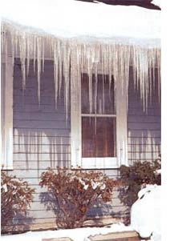
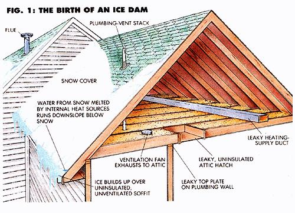
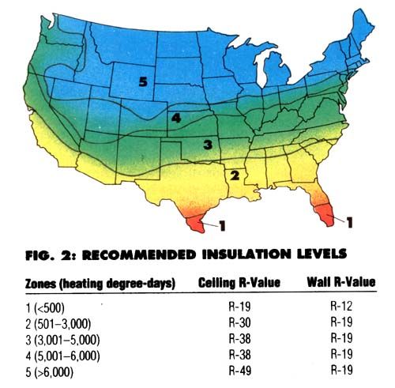

GLISTENING ICICLES DANGLING from the eaves may be among the beauties of winter, but they can also be a sign of trouble for your home. Icicle formation is often a symptom of ice damming, a serious condition that can ruin the roofing, the sheathing below, the rafters and joists that support the roof, the insulation, the paint on the exterior walls, and even the interior finish of your home.
Ice damming occurs when snow melts on a warm area of roof and flows downslope until it refreezes on a colder area near the eaves. Subsequent meltwater then pools above the icy obstruction and does its dirty work. Because most residential roofing systems are designed to shed water, not to seal it out, pooled water can leak up under shingles or around panel-roof seams, penetrating the sheathing and damaging non-weatherresistant materials below.
Major ice damming is seldom the result of natural, daily freeze-thaw cycles. It is almost always caused when heat lost from the house melts snow on the roof. Warmth leaks from the interior, passing through a poorly ventilated attic (or cathedral ceiling) to the roof (Fig. 1). At the same time, portions of the roof that extend beyond the living areaoverhangs, soffits, porch roofs-remain cold and thus refreeze the melt descending from above. It's the difference in surface temperature that causes the problem. Roofs that are all cold or all warm do not get ice dams.
Now that we understand why ice dams happen, let's look at ways to cure them. There are three common methods of attack: Keep the entire roof cold by reducing heat loss from the house; keep the entire roof cold by venting heat loss before it can warm the roof; or keep the entire roof warm by heating the periphery. From an energy standpoint, the first approach obviously is the most attractive. (Roof ventilation has other arguable merits. In fact, it may be required by building code. But it is not a good sole solution to ice damming.) Therefore, we need to determine why so much heat is escaping from the house-and the most effective way to prevent it.
Insufficient or deteriorated attic insulation can lead to ice damming. If your house lacks up insulation in the roof, or if the R-value is below the guidelines shown in Fig. 2, by all means add insulation. You should also inspect existing insulation to ensure that it fits snugly between the ceiling joists and that it does not touch the roof rafters.
How to prevent and cure damaging roof-ice build .
However, according to Gary Nelson, president of Minneapolis Blower Door Company and an experienced researcher in home weatherization, major dams are more often caused by air leakage from the house into the attic or cathedral ceiling than by poor insulation. Air currents carry heat to the underside of the roof much more readily than does radiation through the air or conduction through contiguous materials. Thus a house with a very well insulated but leaky ceiling may still have problems with ice dams.
Often, the house will tell you a story about the problem if you step outside and inspect the pattern of snowmelt on the roof.
Insulation-related ice dams are usually pretty pervasive, because heat lost by this path is dispersed, spreading the problem over much of the roof surface. A typical warm-attic pattern will have wide stripes of melt, with narrow unmelted areas above each rafter. Air leakage-related ice dams, on the other hand, are often localized, because warm air blows directly onto the underside of the roof in specific locations. (Nelson refers to this observational technique as "poor man's infrared imaging.")
Gary has found that there are two areas where air commonly leaks into attics: places where the ceiling changes height, and holes through which various services pass. Examples of the former include lowered ceilings in closets, soffits above cabinets (such as in the kitchen), ceiling junctions in split-level houses, ceilings above stairwells, knee walls in second-story rooms, and drop ceilings over bathtub enclosures. Holes might include plumbing walls that are unsealed at the top, oversize holes for vent stacks that go through a top plate, a missing or leaky attic hatch, air gaps around chimneys, exhaust fans that have loose ducts or that vent directly into the attic, recessed lights, furnace ducts, a wholehouse fan, and built-in vacuum-cleaner ducts.
A careful attic inspection will usually reveal the major leaks. Before going into the attic, note the locations of interior partition walls, so you can inspect from above their junctions with the ceiling. Once in the attic, look for telltale black stains and mildew (or even frost in winter) on the underside of the roof sheathing; air leaks are likely to be found directly below such evidence. Similarly, the tops of ceiling joists may be stained adjacent to a leak. Watch for areas of dust accumulation on insulation bans or loose fill. Large volumes of moving air will carry dust, and quite a bit of it will attach to fibrous materials. If furnace-supply or returnair ducts pass through the attic, inspect them carefully and retape all joints.
Plug air leaks with caulk, foam sealant, well-caulked rigid insulation board, or even insulation-filled plastic bags shoved into the gaps. And don't underestimate the power exerted by buoyant warm air. Unsupported polyethylene sheeting is often unable to withstand the air pressure found at the ceiling in a multistory home, so be sure to back the plastic with plywood or insulation board.
To find the air leak, use "poor man's infrared imaging study the snowmelt on the roof.
While a warm roof is the only actual cause of ice damming, there are several other construction features that may influence the likelihood of dams forming. Roofs with steep slopes, for example, may shed snow before it has a chance to melt and refreeze. Likewise, drifts are more likely to slide from a smooth metal roof than from a rough shingled one. The orientation and color of the roof may also affect the likelihood of a dam occurring. Roof surfaces that face the sun may warm to above freezing even on a day when the air temperature remains below 32°F. Furthermore, once enough snow has melted to expose the roof to the sun, darker colors may speed melting.
Ice buildup along the edges of a roof is more often caused by air leaking from the house than by inadequate insulation levels.
Most of these factors are of interest only to those designing a new home, but a technique based on one of them is often employed on existing homes, particularly in the Northeast. Metal roofing is installed from the eaves to three or four feet up the roof slope, above which point less-expensive shingles are used. The smooth metal is less likely than shingles to let ice accumulate, and it's also better able to withstand the stress when ice does form.
One common approach to eliminating ice damming is to install a grid of electrical heating wire along the eaves. Though certainly effective, such an array must be kept on throughout the winter, using a considerable amount of electricity. What's more, the gutters and downspouts must also be wired to prevent the runoff from freezing within them.
Attic ventilation is often cited as a cure for ice damming, since it prevents heat lost from the house into the attic from warming the roof. Well-insulated, properly designed new homes frequently have attic venting problems, because insulation near the outer walls fills the space between the top plate and the roof sheathing, obstructing the air path between the rafters. Careful insulation installation or specially made spacers can solve this problem. Bear in mind, however, that attic ventilation isn't really a solution to ice damming; it's just a bandage.
As a last-ditch measure, in a situation where you just can't address the problem directly or even by ventilation, consider installing a waterproof membrane below the roofing in the area where ice dam-related leaks are occurring. This protective layer consists of three-foot-wide rolls of polyethylene sheeting coated with rubberized asphalt. The adhesive-backed material selfseals below the roofing and prevents water that does leak through the roof from reaching degradable materials below.
If at all possible, though, don't settle for attacking symptoms. When you fix an icedamming problem the right way-by blocking off the source of heat that causes snow on the roof to melt-you reap multiple benefits. Not only does your home stop rotting, but your heating bills will drop dramatically.
|
 MAP AND ILLUSTRATION BY DON OSBY |
 |
 |